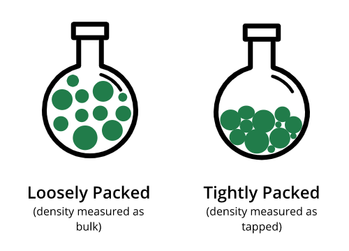
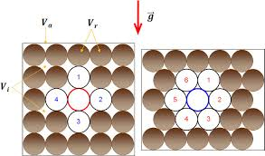
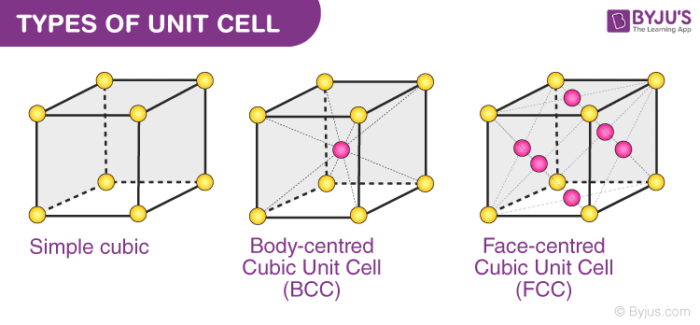
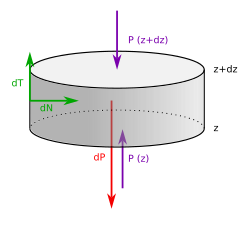
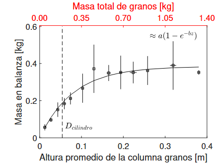
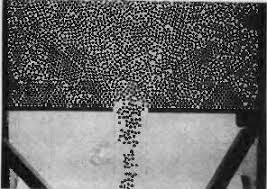
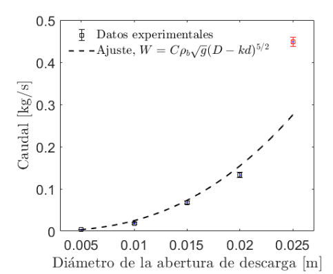
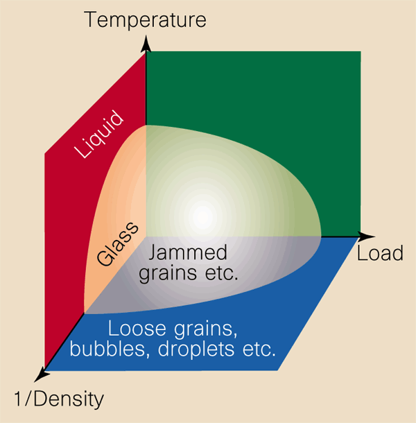

CLASE 2 - GEOFÍSICA DE MEDIOS GRANULARES
DESCRIPCIÓN ESTRUCTURAL:
COMPACIDAD, COORDINACIÓN,
DESCARGA Y JAMMING
THOMAS GALLOT,
CAMILA SEDOFEITO
Instituto de Física,
Facultad de Ciencias,
Universidad de la República
Ángulo de reposo

Métodos de medición del ángulo de reposo
Materiales secos: $17° \leq \alpha \leq 42°$
Materiales cohesivos: $45° \leq \alpha \leq 90°$
Depende de: forma de los granos, rugosidad superficial, humedad, distribución de tamaños.
Métodos de medición:
- Vertido (piling): se vierte material desde una altura fija y se mide el ángulo del cono formado.
- Drenaje (draining): se deja salir el material por la base de un cilindro; el ángulo del cráter resultante es $\alpha$.
- Inclinación (tilting): se inclina gradualmente un recipiente hasta que los granos comienzan a deslizar.
- Tambor rotatorio: se rota un cilindro parcialmente lleno a baja velocidad y se mide el ángulo de la superficie libre.
Avalanchas y flujo de deslizamientos
Una pila granular tiene un ángulo máximo de estabilidad \(\theta_{\max}\). Cuando se supera, se produce una avalancha hasta que el ángulo se reduce a \(\theta_{\min}\).
Dos ángulos críticos:
- \(\theta_{\text{start}}\) (= \(\theta_{\max}\)): ángulo de inicio de la avalancha
- \(\theta_{\text{stop}}\) (= \(\theta_{\min}\)): ángulo de reposo final
\(\Delta\theta = \theta_{\text{start}} - \theta_{\text{stop}} \approx 3°\text{-}5°\) para arena típica.
Regímenes en un tambor rotatorio (velocidad \(\omega\)):
- \(\omega\) baja: avalanchas intermitentes (cuasi-periódicas)
- \(\omega\) alta: flujo continuo sobre la superficie libre
- La transición presenta histéresis
Histéresis: \(\theta_{\text{start}} > \theta_{\text{stop}}\).
Valores típicos para arena: ~35° y ~30°.
Analogía: avalanchas granulares y deslizamientos de tierra
Laboratorio:
- Tambor rotatorio con arena
- Avalanchas intermitentes controladas
- \(\theta_{\text{start}} - \theta_{\text{stop}} \approx 3°\text{-}5°\)
- Escala: centímetros, segundos
Geofísica:
- Deslizamientos de ladera
- Flujos de escombros (debris flows)
- Caídas de acantilados
- Escala: metros a kilómetros, riesgo natural
La física es la misma: competencia entre gravedad y fricción interna.
El criterio de Mohr-Coulomb gobierna ambos casos:
Factores que desestabilizan una ladera:
- Agua: presión de poro reduce la fricción efectiva
- Sismos: aceleración puede superar el umbral de estabilidad
- Erosión: cambio de la geometría de la pendiente
- Sobrecarga: deposición de material nuevo
El agua es crítica:
Un poco de agua estabiliza (puentes capilares, castillos de arena).
Mucha agua desestabiliza (presión de poro, licuefacción).
Densidad aparente y fracción de empaquetamiento
Compacidad, fracción de volumen ocupado, packing fraction, volume fraction: $\phi$, $c$, $\eta$
No confundir con la densidad numérica:
Si todas las partículas son iguales ($v_g$: volumen de una partícula):
Porosidad: $\epsilon = 1 - \phi$


Empaquetamientos regulares en 2D
Empaquetamiento cuadrado
Celda unitaria: cuadrado de lado $2R$, contiene 1 disco.
Empaquetamiento hexagonal
Es el empaquetamiento más denso posible en 2D (Thue, 1892).

Izquierda: cuadrado ($z=4$) | Derecha: hexagonal ($z=6$)
Límite 2D: $\displaystyle 0 < c < \frac{\pi\sqrt{3}}{6} \approx 0.91$ (hexagonal)
Empaquetamientos regulares en 3D
| Estructura | $\phi$ | $z$ |
|---|---|---|
| Cúbica simple (SC) | $\dfrac{\pi}{6} \approx 0.524$ | 6 |
| BCC | $\dfrac{\pi\sqrt{3}}{8} \approx 0.680$ | 8 |
| FCC / HCP | $\dfrac{\pi}{3\sqrt{2}} \approx 0.740$ | 12 |
Conjetura de Kepler (1611): El empaquetamiento más denso de esferas idénticas en 3D es $\phi = \frac{\pi}{3\sqrt{2}} \approx 0.7405$, alcanzado por FCC y HCP.
Demostrado por T. Hales (1998, publicado 2005).


Límite 3D: $\displaystyle 0 < \phi < \frac{\pi}{3\sqrt{2}} \approx 0.74$
Compacidad — medición
Geometría básica

Fotografía
$\phi = \dfrac{N_{\text{black pixels}}}{N_{\text{pixels}}}$

Geometría probabilística
$\phi = \dfrac{N_{\text{hits}}}{N_{\text{shots}}}$

Métodos de medición de la compacidad
Métodos directos
- Pesaje: \(\phi = M / (\rho_g V)\) — simple pero requiere conocer \(V\) con precisión
- Análisis de imagen 2D: binarización y conteo de píxeles (limitado a la superficie)
- Tomografía de capacitancia eléctrica: mide la permitividad local, no invasiva
Métodos no invasivos 3D
- Absorción de rayos gamma: ley de Beer-Lambert \(I = I_0 \, e^{-\mu \rho \ell}\)
- Tomografía de rayos X (micro-CT): resolución ~\(\mu\)m, reconstrucción 3D completa
- Resonancia magnética nuclear (RMN/MRI): ideal para granos en fluido
Rayos X y gamma son los métodos estándar en geofísica de campo y laboratorio — permiten medir \(\phi\) de forma no destructiva en muestras opacas y a diferentes profundidades.
Andreotti, Forterre & Pouliquen, Granular Media (2013), §3.1, Box p.60–61.
Número de coordinación $z$
El número de coordinación $z$ cuenta los vecinos más cercanos (primera capa) de una partícula.
El número de contacto cuenta solamente los vecinos que están en contacto mecánico real.
Si los granos son convexos:
Valores máximos (monodisperso):
Esferas (3D): $z_{\max} = 12$ | Discos (2D): $z_{\max} = 6$


Número de contacto — isostacidad
Deposición secuencial
(cualquier forma convexa, partículas rígidas)
- 2D: $\langle z \rangle = 2\frac{2N}{N} = 4$ (cada grano suma 2 contactos)
- 3D: $\langle z \rangle = 2\frac{3N}{N} = 6$ (cada grano suma 3 contactos)
Isostático
(contactos puntuales: ligaduras = fuerzas)
- 2D: $3N$ ligaduras, $2N_c$ fuerzas → $N_c = \frac{3N}{2}$ → $\langle z \rangle = 3$
- 3D: $6N$ ligaduras, $3N_c$ fuerzas → $N_c = 2N$ → $\langle z \rangle = 4$
Valores experimentales (confocal):
$\phi = 0.4 \to \langle z \rangle = 4$; $\phi = 0.65 \to \langle z \rangle = 8$


Número de contacto — medición
- El número de contacto es difícil de medir: es difícil distinguir contactos reales de "casi-contactos".
- En simulaciones se requiere guardar posiciones con altísima precisión. Es mejor distinguir por las fuerzas.
- Métodos experimentales: pintura, oxidación, trazadores fluorescentes, partículas fotoelásticas, puentes líquidos, conductividad.

Behringer (fotoelásticas)

Kudroli
Efecto Janssen: presión en silos
En un fluido, la presión crece linealmente con la profundidad (ley de Pascal):
En un silo granular, la fuerza en la base satura:
- \(F < Mg\) : la balanza mide menos que el peso total.
- La fricción con las paredes redirige parte del peso hacia los costados del silo.
- La forma de llenado cambia la saturación.
- La columna tiene que estar en fricción movilizada para que se observe la saturación.
Modelo de Janssen
Balance de fuerzas sobre una rebanada de espesor \(dz\) en un silo cilíndrico de radio \(R\):
Hipótesis:
- Fricción completamente movilizada: \(\sigma_{rz}(R) = \mu_s \sigma_n(R)\)
- Relación constitutiva: \(\sigma_n = K\,\sigma_{zz}\) (redirección de fuerzas)
Ecuación diferencial resultante:
con \(\sigma_{zz}(z=0)=0\). La solución es:


Janssen: parámetros clave
Reescribiendo la solución de Janssen:
Presión de saturación:
\(P_{\text{sat}} = \dfrac{\rho g R}{2\mu_s K} = \dfrac{\rho g D}{4\mu_s K}\)
Longitud característica:
\(\lambda = \dfrac{R}{2\mu_s K} = \dfrac{D}{4\mu_s K}\)
Para \(z \gg \lambda\), la presión se vuelve independiente de la altura.
Experimentalmente, la masa aparente de saturación es proporcional a \(R^3\), consistente con \(\sigma_{zz} \to \frac{\rho g R}{2\mu_s K}\).
| Parámetro | Descripción | Valor típico |
|---|---|---|
| \(K\) | Coeficiente de Janssen (redirección) | 0.5 - 0.8 |
| \(\mu_s\) | Coeficiente de fricción grano-pared | 0.3 - 0.6 |
| \(\lambda\) | Longitud característica | 5 - 15 cm |
| \(D\) | Diámetro del silo | 4 - 6 cm (lab) |
Diferencia fundamental:
Fluido: \(P = \rho g h\) (crece linealmente)
Granular: \(P \to P_{\text{sat}}\) (satura exponencialmente)
Descarga granular: ley de Beverloo
El caudal másico \(W\) en silos es constante e independiente de la altura de llenado (a diferencia de la ley de Torricelli para fluidos).
Esto es consecuencia directa del efecto Janssen: la presión en el fondo satura.
Concepto de "free fall arch":
La velocidad de salida se fija por la caída libre sobre el diámetro de apertura:
\(v = \sqrt{g\,D_0}\)
Beverloo, Leniger y Van de Velde (1961) midieron \(W^{2/5}\) vs. \(D_0\) y obtuvieron una recta:
\(C \approx 0.58\), \(k \approx 1.4\), \(D_0\) = apertura, \(d\) = diámetro de grano


Ley de Beverloo: detalles
El término \(kd\) se asocia a efectos de borde: zona anular cerca del orificio donde la densidad de partículas es menor (efecto de "anillo vacío").
Condiciones de validez:
- \(W\) no depende de \(H\) si \(H > 2D_0\)
- \(W\) no depende de \(D\) (diámetro del silo) si \(D > 2{,}5\,D_0\)
- Válida para \(400\,\mu\text{m} < d < D_0/6\)
Caso 2D (ranura): el exponente cambia de 5/2 a 3/2
\(W \propto \sqrt{g}\,(D_0 - kd)^{3/2}\)
Jamming: transición de atasco
Cuando la apertura \(D_0\) se reduce, el flujo puede detenerse por formación de arcos estables de partículas sobre el orificio.
Relación crítica \(D_0/d\):
- Para \(D_0/d > 5\): flujo continuo (generalmente)
- Para \(D_0/d \sim 3\text{-}5\): flujo intermitente, atascos esporádicos
- Para \(D_0/d < 3\): atasco permanente (arcos estables)
La probabilidad de atasco \(J(D_0/d)\) se mide repitiendo la descarga muchas veces para cada apertura.
Diagrama de jamming (Liu-Nagel, 1998):
Tres ejes controlan la transición flujo/atasco:
- \(1/\phi\) (inverso de la densidad)
- Esfuerzo de corte \(\sigma\)
- Temperatura (o agitación)

Diagrama de jamming de Liu & Nagel (1998).
El punto J marca la transición de atasco.
Formación de arcos y flujo intermitente
Los arcos son estructuras autoestabilizantes donde cada grano se sostiene mutuamente por fricción y geometría.
Jamming y formación de arcos en un silo
Efecto de la forma y tamaño:
- Relación \(D_0/d\): cuanto menor es la relación, mayor la probabilidad de atasco.
- Forma del orificio: un orificio circular se atasca más fácilmente que una ranura del mismo ancho.
- Forma de los granos: partículas no esféricas (alargadas, angulares) forman arcos más fácilmente.
- Fricción: mayor fricción entre granos estabiliza los arcos.
Reloj de arena con granos finos (\(d < 300\,\mu\)m):
- \(d < 40\,\mu\)m: no hay flujo (cohesión)
- \(40 < d < 300\,\mu\)m: flujo intermitente
- \(d > 300\,\mu\)m: flujo continuo
Teselación de Voronoi

● Puntos rojos: centros de las partículas
Polígonos blancos: celdas de Voronoi
▬ Red negra: red de Delaunay
Construcción: dado un conjunto de puntos, para cada punto $i$ se define su celda como $\{x : |x - x_i| \leq |x - x_j|, \forall j \neq i\}$. Lo implementaremos numéricamente en el próximo experimento.
- Celda de Voronoi: región del espacio más cercana a un punto dado que a cualquier otro punto del conjunto.
- La red recíproca se llama red de Delaunay: conecta puntos cuyas celdas de Voronoi comparten una arista.
- Para esferas y discos, cada grano está contenido en su celda.
Aplicaciones de las celdas de Voronoi:
- Densidad local: $\phi_{\text{local}} = v_g / V_{\text{Voronoi}}$
- Transición de jamming: identificar regiones localmente densas/sueltas y la heterogeneidad espacial de $\phi$